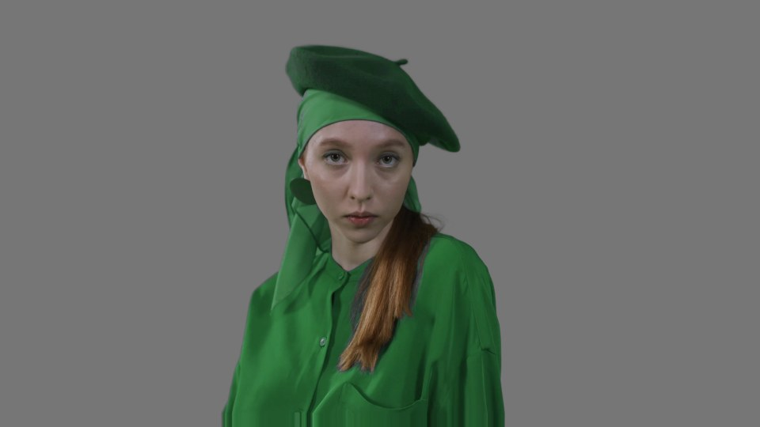

Nuke does not run the AI model itself. When you press OK in the panel, the tool writes a small job file and starts a separate engine program in the background. The engine turns your clip into a linear EXR "plate", runs CorridorKey 2.0 on the graphics card, and writes the alpha (matte), the foreground colour and a despilled foreground as EXR files. Nuke then loads these back for you, already wired into a ready-to-use comp. You can keep working in Nuke while it runs.
The folder D:\CK2_bundle on this laptop holds everything the other PC needs. Nothing has to
be downloaded from the internet.
| Item in the folder | What it is | Size |
|---|---|---|
CorridorKey2\upstream | CorridorKey 2.0 program code, its weights and the foundation models it uses | 4.8 GB |
CorridorKey2\venv and .uv-python | The Python 3.12 environment with PyTorch for NVIDIA GPUs (CUDA 12.8) | 4.9 GB |
CorridorKey2\ComfyUI-CorridorKey2\ck2\worker.py | The worker program that drives CorridorKey for each job | small |
CorridorKey2\ffmpeg | ffmpeg and ffprobe, used to read MP4/MOV video | about 0.2 GB |
nuke plugin | The Nuke tool itself (menu, panel, engine, docs, tests) | small |
install_bundle.ps1 | The installer you run on the other PC | small |
INSTALL.md and this PDF | Instructions | small |
CorridorKey2\upstream\LICENSE). This bundle is for your own machines.Check these on the other PC (the one with the RTX 3050) before installing:
nvidia-smi and press Enter. The number after "Driver Version" must be 570 or higher.
If it is lower, or the command is not found, install the latest Game Ready or Studio driver from
nvidia.com (or the NVIDIA App) and restart the PC.D:\ by default
(D:\CorridorKey2, D:\nuke plugin, shots in D:\CKShots). If the other PC
has no D: drive, or you prefer another drive, step 4 shows how to choose it.Do this on this laptop.
E: or F:).D:\ in File Explorer. Right-click the folder CK2_bundle and choose Copy.E:;
replace it with yours.powershell -ExecutionPolicy Bypass -File "E:\CK2_bundle\install_bundle.ps1"This installs to the D: drive. To install to another drive instead, add
-Root and
-Shots, for example for the C: drive:
powershell -ExecutionPolicy Bypass -File "E:\CK2_bundle\install_bundle.ps1" -Root "C:\" -Shots "C:\CKShots"
| Step | Detail |
|---|---|
| Copies the engine | To <drive>\CorridorKey2 |
| Copies the tool | To <drive>\nuke plugin |
| Fixes the Python environment | Points it at its copied interpreter so it works from the new location |
Writes settings.local.json | Inside nuke plugin, with this PC's paths for the engine, ffmpeg and the shots folder |
| Adds the Nuke menu | Adds one line to C:\Users\<you>\.nuke\init.py so Nuke loads the tool at start-up |
| Runs the setup check | Prints PASS or FAIL for each requirement |
A good result looks like this (the GPU line will name your RTX 3050):
PASS engine files all present PASS ffmpeg / ffprobe ffmpeg version 8.1.2-full_build-www.gyan.dev (zscale ok) PASS NVIDIA driver driver 5xx.xx or newer PASS GPU from the engine python NVIDIA GeForce RTX 3050, 8.0 GB, torch 2.9.1+cu128 CUDA 12.8 PASS shots folder D:\CKShots writable, NN GB free PASS Nuke menu hook C:\Users\you\.nuke\init.py All good - start Nuke and look for the CorridorKey 2.0 menu.
| Line | What it checks | If it says FAIL |
|---|---|---|
| engine files | CorridorKey code, weights, foundation models and worker are present | The copy was incomplete. Re-copy the bundle to the USB drive and run the installer again. |
| ffmpeg / ffprobe | Video reading tools run and support the colour conversion filter | Open nuke plugin\settings.local.json and check the ffmpeg paths point at CorridorKey2\ffmpeg\ffmpeg.exe. |
| NVIDIA driver | Driver is 570 or newer | Update the NVIDIA driver, restart, run the check again (command below). |
| GPU from the engine python | PyTorch can use the graphics card and run a test calculation | Almost always the driver. Update it and restart. |
| shots folder | The shots folder can be written and has 20+ GB free | Free some space, or choose another drive with -Shots. |
| Nuke menu hook | Nuke's start-up file loads this tool | Run the hook command below, then restart Nuke. |
Run the setup check again at any time (change D: if you installed elsewhere):
D:\CorridorKey2\venv\Scripts\python.exe "D:\nuke plugin\tools\check_setup.py"
Add the Nuke menu again:
D:\CorridorKey2\venv\Scripts\python.exe "D:\nuke plugin\install_nuke_hook.py"
Remove the Nuke menu (uninstall from Nuke):
D:\CorridorKey2\venv\Scripts\python.exe "D:\nuke plugin\install_nuke_hook.py" --remove
Use this for phone or camera video. Because Nuke NC cannot open MP4/MOV, you first let the tool make a plate.
D:\CKShots).A hint tells the model which subject to key. It helps most when there are several people or objects, or when the model keeps something you do not want.
| Hint option | When to use it |
|---|---|
| None (model picks the subject) | One clear subject. Try this first. |
| Selected node, first frame (e.g. Roto) | Point at the subject once; the model follows it through the shot. |
| Selected node, every frame | An animated Roto or matte for every frame. |
| Matte file, first frame | A matte image on disk instead of a node. |
| Matte file / sequence, every frame | A matte image sequence or a matte video on disk. |
The invert tick box swaps black and white in the hint (use it if your matte is black on the subject).
| Setting | Default | What it does |
|---|---|---|
| Source | ||
| source | Selected Read | Key the selected Read node, or a "File on disk" (needed for MP4/MOV). |
| file | empty | The video, image sequence or folder to key when source is "File on disk". |
| Shot | ||
| shot name | from the file name | Name of the shot folder. Each shot gets its own folder. |
| shots folder | D:\CKShots | Where shot folders are created. Needs plenty of free space. |
| Colour | ||
| colour space | sRGB / Rec.709 (EXR: Linear Rec.709) | What the footage was recorded in: sRGB/Rec.709 video, Linear Rec.709, ACEScg, Sony S-Log3 (S-Gamut3 or .Cine), Panasonic V-Log, Apple Log, HLG HDR, PQ HDR, Auto, or an OCIO name. |
| OCIO name | empty | Only for "Other: OCIO colour space by name". |
| YUV matrix | auto | How video colour is decoded. Leave on auto unless colours look shifted. |
| range | auto | Video levels. If the plate looks washed out or too contrasty, try limited or full. |
| out-of-gamut | clamp | What to do with colours outside Rec.709 from wide-gamut footage. Leave on clamp. |
| Frames | ||
| first / last | 0 / 0 (whole clip) | Which frames to key. For video, frame 1 is the first frame. |
| plate starts at | 1001 | Frame number the plate starts at in Nuke (video only; sequences keep their numbers). |
| preview only / frames | off / 24 | Key only the first N frames into a preview folder to test settings quickly. |
| Hint | ||
| hint, node, matte file, invert | None | See section 9. |
| hint quality | 0.95 | How much to trust the hint: 0.95 careful roto, 0.75 rough matte, 0.5 scribble. |
| Output | ||
| despill | 1.0 | Strength of green/blue spill removal in the extra "fg_despill" pass. 0 turns the pass off. |
| screen | green | The screen colour: green or blue. |
| despill where | edges + bounce | "edges + bounce" removes spill on soft edges and green light reflected onto the subject, but keeps green clothing green. "everywhere" removes all green, which greys out green objects at 1.0. |
| crop to subject / margin | auto / 64 | "auto" finds the subject and keys only the box around it, then puts the result back full size. Faster and uses less GPU memory. It keys the full frame by itself when the subject fills the frame. |
| refine matte | hair/fur | Clean-up after keying. "hair/fur" removes stray specks and steadies flickering edges, keeping fine strands. "solid" also fills small holes and firms edges (people in clothes, props). "off" leaves the matte untouched. |
| grow/shrink px | 0 | Moves the matte edge out (positive) or in (negative) by that many pixels. |
| window | auto | How many frames the model looks at together. "auto" picks the largest that fits the GPU. Lower (8 or 4) if you get memory errors. |
| low VRAM | off | Uses less GPU memory at some cost in speed. Turn on for 4K or after a memory error. |
| prepare plate only | off | Only make the plate (no key), so you can draw a Roto on it first. |
When a key finishes, the tool adds a labelled Backdrop to the node graph containing:
Replace the grey background with your own plate to comp. All Reads are set to linear and the full plate resolution.

D:\CKShots\<shot>\ job.json status.json log.txt settings used, result, full log plate_lin\ plate.1001.exr ... linear plate (reused when you key again) hint\ hint images made from your Roto key\v001\ alpha\ fg\ fg_despill\ first key key\v002\ ... each new key is a new version key\preview\ preview keys (overwritten each time)
Keys are never overwritten: every full key makes a new version folder (v001, v002...). Only preview is replaced.
The RTX 3050 has the same 8 GB of memory as the laptop the tool was tested on, so the same settings apply. It is a slower card, so keys take longer. Speed on the RTX 3050 has not been measured yet. For reference, on the RTX 5060 Laptop a 16-frame 1080p shot took about 60 to 75 seconds in total (most of it is loading the model, which happens once per key), and 4K took about 95 seconds plus 4.5 seconds per frame.
| Footage | Recommended settings |
|---|---|
| HD / 1080p (most shots) | Leave the defaults: window auto, low VRAM off, crop auto, despill 1.0 edges + bounce, refine hair/fur. |
| 2K / 1440p | Defaults. If you get a memory error, tick low VRAM. |
| 4K / UHD | Tick low VRAM. Keep crop on auto (it helps a lot when the subject does not fill the frame). Use a preview of 16 frames first. If it still runs out of memory, set window to 8, then 4. |
| Long shots (hundreds of frames) | Fine: the engine works through the shot window by window. Make sure the shots drive has room (4K needs about 25 MB per frame per pass). |
| Menu item | What it does |
|---|---|
| Load latest key of a shot... | Pick a shot folder; the newest key is loaded into Nuke as the same Backdrop comp. Use it after reopening Nuke, or for keys made on the command line. |
| Clean up a shot... | Pick a shot folder; it deletes temporary files, previews, hint renders and older key versions to free disk space. It always keeps the newest version, and asks before deleting the plate. |
| About | Shows the version, tool folder, engine Python, shots folder and settings file. |
Every key is described by a job.json in the shot folder. To run a job again, or many jobs one after another,
from cmd:
"D:\nuke plugin\run_job.bat" "D:\CKShots\myshot\job.json" "D:\nuke plugin\run_queue.bat" "D:\CKShots"
run_queue.bat keys every job.json it finds under the folder. Load the results with "Load latest key of a shot...".
Every key writes log.txt and status.json in its shot folder. Open log.txt first; the last lines say what went wrong.
| Message or problem | What to do |
|---|---|
| No CorridorKey 2.0 menu in Nuke | Run the "Add the Nuke menu" command from section 5 and restart Nuke. Check C:\Users\<you>\.nuke\init.py contains a line ending in "CorridorKey 2.0 tool". |
| "The GPU ran out of memory", "ran out of Windows memory", or "engine crashed (access violation)" | Usually Windows memory, not the graphics card: the engine needs about 15 GB of RAM + page file. Run the setup check (section 5); if "Windows memory" says FAIL, move the page file to a drive with space (see the row below). Otherwise close other GPU programs (other Nuke windows, cineSync, browsers), tick low VRAM, or set window to 4. The tool already retries by itself with a smaller window. |
| Setup check: "Windows memory (RAM + page file)" FAIL | The page file is too small or on a nearly full drive. Press Start, type Adjust the appearance and performance of Windows, open it, go to Advanced → Virtual memory → Change. Untick "Automatically manage", select the D: drive, choose System managed size, click Set, then OK, and restart the PC. |
| "CorridorKey venv python not found" or "weights missing" | Paths are wrong. Run the setup check (section 5); re-run the installer if files are missing. |
| "ffmpeg not found" | Check the ffmpeg lines in nuke plugin\settings.local.json. |
| Key looks washed out or too contrasty | Wrong colour space or range. Check the camera setting; try range "limited" or "full". |
| Green screen left inside the subject | Add a Roto hint (quality 0.75 for a rough shape). If you used a rough Roto at 0.95, lower it to 0.75. |
| "the first-frame hint is empty" | The Roto has no shape on the first frame of the range, or invert is ticked by mistake. |
| "hint sequence has N frames but the plate needs M" | The hint covers a different frame range from the key. Use the same first/last. |
| "this shot is already being keyed" | Another key of this shot is running. Wait or cancel it. If nothing is running, delete the file .running in the shot folder. |
| "Disk full" | Free space or use "Clean up a shot...". |
| "camera raw can't be decoded" | BRAW, R3D and ARRIRAW are not supported. Export to EXR (or ProRes) from the camera software first. |
| Warning in log.txt or Nuke's Script Editor: "the subject touches the crop box edge" | Part of the subject may be cut off. Raise the crop margin (for example 128) or set crop to off, and key again. |
When the tool is improved on the first laptop, there are two ways to bring the changes to the other PC:
The nuke plugin folder is a git copy of the private repository. If Git is installed and signed in to
the GitHub account that owns the repository:
cd /d "D:\nuke plugin" git pull
Restart Nuke afterwards.
powershell -ExecutionPolicy Bypass -File "D:\nuke plugin\tools\make_bundle.ps1" -Dest "D:\CK2_bundle"
install_bundle.ps1 on the other PC again, as in section 4.Reinstalling replaces the program files only. Your shots in the shots folder are not touched.
powershell -ExecutionPolicy Bypass -File "E:\CK2_bundle\install_bundle.ps1" (installs to D:) powershell -ExecutionPolicy Bypass -File "E:\CK2_bundle\install_bundle.ps1" -Root "C:\" -Shots "C:\CKShots"
D:\CorridorKey2\venv\Scripts\python.exe "D:\nuke plugin\tools\check_setup.py"
| Phone video | sRGB / Rec.709 | Rough Roto | hint quality 0.75 |
| Careful Roto | hint quality 0.95 | 4K on RTX 3050 | low VRAM on, preview 16 first |
| Green clothes on green | despill where: edges + bounce | Hard-edged subject | refine: solid |
| Memory error | low VRAM, window 8 then 4 | Disk full | Clean up a shot... |
| Tool | D:\nuke plugin |
| Engine | D:\CorridorKey2 |
| Shots | D:\CKShots\<shot> — log.txt, key\v001\alpha, fg, fg_despill |
| This PC's paths | D:\nuke plugin\settings.local.json |